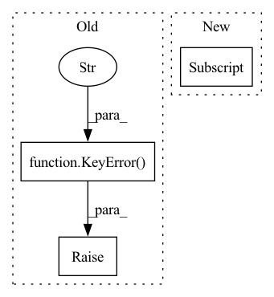

Pattern ID :33298
Before Change
try:
return available_flavors[component_flavor]
except KeyError:
raise KeyError(
f"No stack component class found for type {component_type} "
f"and flavor {component_flavor}. Registered flavors for this "
f"type: {set(available_flavors)}. If your stack component "
f"class is part of a ZenML integration, make sure to active "
f"them by calling "
f"`IntegrationRegistry.activate_integrations()`."
) from None
C = TypeVar("C", bound=StackComponent)After Change
integration_registry.activate_integrations()
try:
return available_flavors[component_flavor]
except KeyError:
raise KeyError(
f"No stack component class found for type {component_type} "
f"and flavor {component_flavor}. Registered flavors for "In pattern: SUPERPATTERN
Frequency: 3
Non-data size: 3
Instances Fragment ID: 96039275
Project Name: maiot-io/zenml
Commit Name: 9577892bdc25128f3a765f6a7a83b317ddeac2e6
Time: 2022-02-17
Author: schustmi@users.noreply.github.com
File Name: src/zenml/stack/stack_component_class_registry.py
M Class Name: StackComponentClassRegistry
N Class Name: StackComponentClassRegistry
M Method Name: get_class(3)
N Method Name: get_class(3)
M Parent Class:
N Parent Class:
M File Name: src/zenml/stack/stack_component_class_registry.py
N File Name: src/zenml/stack/stack_component_class_registry.py
M Start Line: 101
M End Line: 109
N Start Line: 101
N End Line: 120
Before Change
else:
for key in item:
if key not in self.data:
raise KeyError("when append a item to the batch, raise this error!" )
self.data[key].append(item[key])
if self.pad_len[key] < len(item[key]):
// 保持 pad_len 是最大的
self.pad_len[key] = len(item[key])After Change
key = self.feature_name[i]
self.data[key].append(item[i])
if key in self.pad_item:
self.origin_len[key].append(len(item[i] ))
if self.pad_len[key] < len(item[i]):
// 保持 pad_len 是最大的
self.pad_len[key] = len(item[i]) Fragment ID: 96039274
Project Name: libcity/bigscity-libcity
Commit Name: e8d50fbd09be309b197c500d121e7b52c6a79468
Time: 2020-12-22
Author: 842595644@qq.com
File Name: trafficdl/data/batch.py
M Class Name: Batch
N Class Name: Batch
M Method Name: append(2)
N Method Name: append(2)
M Parent Class: object
N Parent Class: object
M File Name: trafficdl/data/batch.py
N File Name: trafficdl/data/batch.py
M Start Line: 22
M End Line: 38
N Start Line: 29
N End Line: 40
Before Change
try:
return self._steps[step_name]
except KeyError:
raise KeyError(
f"No step found for name `{step_name}`. This pipeline "
f"run only has steps with the following "
f"names: `{self.get_step_names()}`"
)
def _ensure_steps_fetched(self) -> None:
Fetches all steps for this pipeline run from the metadata store.
if self._steps:After Change
f"names: `{self.get_step_names()}`"
)
return self._steps[step]
def _ensure_steps_fetched(self) -> None:
Fetches all steps for this pipeline run from the metadata store.
if self._steps: Fragment ID: 96039278
Project Name: maiot-io/zenml
Commit Name: 771bddac97bf99e5a1c9bad3b0227a187c592c51
Time: 2022-08-02
Author: felix@zenml.io
File Name: src/zenml/post_execution/pipeline_run.py
M Class Name: PipelineRunView
N Class Name: PipelineRunView
M Method Name: get_step(2)
N Method Name: get_step(2)
M Parent Class:
N Parent Class:
M File Name: src/zenml/post_execution/pipeline_run.py
N File Name: src/zenml/post_execution/pipeline_run.py
M Start Line: 163
M End Line: 236
N Start Line: 161
N End Line: 224